CaseStudy02-Final
Introduction
For this case study, we investigated the CaseStudy02 dataset. The dataset contained 870 entries with 36 feature vectors. Through the analysis, we were able to classify potential Attrition for employees with greater than 70% accuracy as well as predict income rates with an RMSE of 1387. In addition, we overcame several unforeseen challenges in the dataset.
Exploratory Data Analysis
In this section we will perform an exploratory data analysis (EDA) of the CaseStudy-2 dataset. This dataset can be found in the datasets directory for the project. The project will attempt to investigate the data by performing the following steps:
Determine the dimensions of the dataset.
Address non-informative / missing features.
Compute the correlation values between numeric features and the
Attritionvariable.Comment on the distribution of
Attritionvariable.Compute the correlation values between categorical features and the
Attritionvariable.Identify any relationship between the
Attritionvariable and other variables in the dataset.Compute the correlation values between numeric features and the
MonthlyIncomevariable.Identify any relationship between the
MonthlyIncomevariable and other variables in the dataset.
1. Determine the dimensions of the dataset
The dataset contains 870 entries with 36 features.
#get the data from the file
caseStudy2DF <- read.csv('datasets\\CaseStudy2-data.csv')
#get the dimensions
dim(caseStudy2DF)## [1] 870 36#view a few
head(caseStudy2DF)## ID Age Attrition BusinessTravel DailyRate Department
## 1 1 32 No Travel_Rarely 117 Sales
## 2 2 40 No Travel_Rarely 1308 Research & Development
## 3 3 35 No Travel_Frequently 200 Research & Development
## 4 4 32 No Travel_Rarely 801 Sales
## 5 5 24 No Travel_Frequently 567 Research & Development
## 6 6 27 No Travel_Frequently 294 Research & Development
## DistanceFromHome Education EducationField EmployeeCount EmployeeNumber
## 1 13 4 Life Sciences 1 859
## 2 14 3 Medical 1 1128
## 3 18 2 Life Sciences 1 1412
## 4 1 4 Marketing 1 2016
## 5 2 1 Technical Degree 1 1646
## 6 10 2 Life Sciences 1 733
## EnvironmentSatisfaction Gender HourlyRate JobInvolvement JobLevel
## 1 2 Male 73 3 2
## 2 3 Male 44 2 5
## 3 3 Male 60 3 3
## 4 3 Female 48 3 3
## 5 1 Female 32 3 1
## 6 4 Male 32 3 3
## JobRole JobSatisfaction MaritalStatus MonthlyIncome
## 1 Sales Executive 4 Divorced 4403
## 2 Research Director 3 Single 19626
## 3 Manufacturing Director 4 Single 9362
## 4 Sales Executive 4 Married 10422
## 5 Research Scientist 4 Single 3760
## 6 Manufacturing Director 1 Divorced 8793
## MonthlyRate NumCompaniesWorked Over18 OverTime PercentSalaryHike
## 1 9250 2 Y No 11
## 2 17544 1 Y No 14
## 3 19944 2 Y No 11
## 4 24032 1 Y No 19
## 5 17218 1 Y Yes 13
## 6 4809 1 Y No 21
## PerformanceRating RelationshipSatisfaction StandardHours StockOptionLevel
## 1 3 3 80 1
## 2 3 1 80 0
## 3 3 3 80 0
## 4 3 3 80 2
## 5 3 3 80 0
## 6 4 3 80 2
## TotalWorkingYears TrainingTimesLastYear WorkLifeBalance YearsAtCompany
## 1 8 3 2 5
## 2 21 2 4 20
## 3 10 2 3 2
## 4 14 3 3 14
## 5 6 2 3 6
## 6 9 4 2 9
## YearsInCurrentRole YearsSinceLastPromotion YearsWithCurrManager
## 1 2 0 3
## 2 7 4 9
## 3 2 2 2
## 4 10 5 7
## 5 3 1 3
## 6 7 1 7#get the classes for each feature vector
sapply(caseStudy2DF, class)## ID Age Attrition
## "integer" "integer" "character"
## BusinessTravel DailyRate Department
## "character" "integer" "character"
## DistanceFromHome Education EducationField
## "integer" "integer" "character"
## EmployeeCount EmployeeNumber EnvironmentSatisfaction
## "integer" "integer" "integer"
## Gender HourlyRate JobInvolvement
## "character" "integer" "integer"
## JobLevel JobRole JobSatisfaction
## "integer" "character" "integer"
## MaritalStatus MonthlyIncome MonthlyRate
## "character" "integer" "integer"
## NumCompaniesWorked Over18 OverTime
## "integer" "character" "character"
## PercentSalaryHike PerformanceRating RelationshipSatisfaction
## "integer" "integer" "integer"
## StandardHours StockOptionLevel TotalWorkingYears
## "integer" "integer" "integer"
## TrainingTimesLastYear WorkLifeBalance YearsAtCompany
## "integer" "integer" "integer"
## YearsInCurrentRole YearsSinceLastPromotion YearsWithCurrManager
## "integer" "integer" "integer"2. Address non-informative / missing features
The dataset does not contain missing values that need to be compensated for. However, several features have been identified as non-informative. They need to be removed for simplicity.
#required libraries
library(DataExplorer)
library(dplyr)
#look for missing values
plot_missing(caseStudy2DF, title='Misssing data points')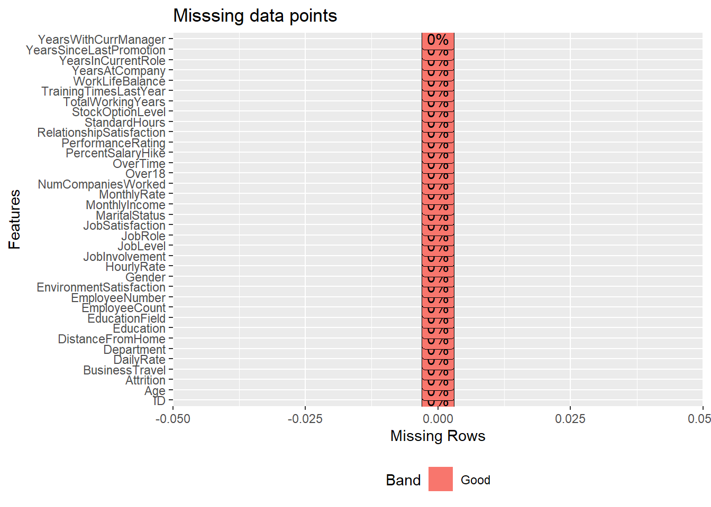
#ok no missing values, lets look for all the same values
badCols = caseStudy2DF %>% summarise_all(funs(n_distinct(.))) %>% select_if(. == 1)
names(badCols)## [1] "EmployeeCount" "Over18" "StandardHours"#we have 3 cols that just have one value in it
#create a new df without them
caseStudyMin = caseStudy2DF[, -which(names(caseStudy2DF) %in% names(badCols))]
dim(caseStudyMin)## [1] 870 333. Compute the correlation values between numeric features and the Attrition variable
#required libraries
library(purrr)
library(tidyr)
library(ggplot2)
library(corrplot)
library(corrly)
library("PerformanceAnalytics")
#get an overview of each feature vector
caseStudyMin %>% keep(is.numeric) %>% gather() %>% ggplot(aes(value)) + facet_wrap(~ key, scales = "free") + geom_histogram()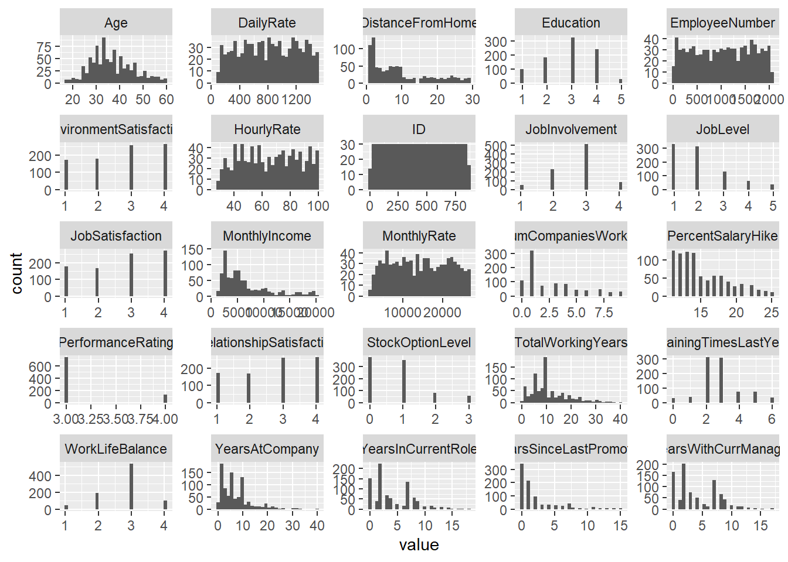
#split the dataset into yes and no for attrition
attNoDf <- filter(caseStudyMin, caseStudyMin$Attrition == 'No') %>% keep(is.numeric)
attYesDf <- filter(caseStudyMin, caseStudyMin$Attrition == 'Yes') %>% keep(is.numeric)
#get the size of each sample population
dim(attNoDf)## [1] 730 25dim(attYesDf)## [1] 140 25#view the correlations for the no population
matrixly(data=attNoDf)#view the correlations for the yes population
matrixly(data=attYesDf)#convert the yes and no into ints and view the entire population
numericAttritionDf <- caseStudyMin %>% mutate(Attrition = ifelse(as.character(Attrition) == "Yes", 1, as.character(Attrition)))
numericAttritionDf <- numericAttritionDf %>% mutate(Attrition = ifelse(as.character(Attrition) == "No", 0, as.numeric(Attrition)))
numericAttritionDf <- numericAttritionDf %>% keep(is.numeric)
matrixly(data=numericAttritionDf)#get the rounded correlation data as a table
res <- cor(numericAttritionDf)
round(res, 2)## ID Age Attrition DailyRate DistanceFromHome
## ID 1.00 -0.04 0.05 -0.03 0.07
## Age -0.04 1.00 -0.15 0.01 0.01
## Attrition 0.05 -0.15 1.00 -0.03 0.09
## DailyRate -0.03 0.01 -0.03 1.00 0.01
## DistanceFromHome 0.07 0.01 0.09 0.01 1.00
## Education -0.05 0.22 -0.05 -0.01 0.05
## EmployeeNumber -0.02 0.01 -0.02 -0.03 0.00
## EnvironmentSatisfaction -0.01 -0.01 -0.08 -0.01 -0.04
## HourlyRate 0.01 0.05 0.04 0.05 0.07
## JobInvolvement -0.05 0.02 -0.19 0.06 0.00
## JobLevel -0.04 0.48 -0.16 0.00 0.02
## JobSatisfaction 0.04 -0.02 -0.11 0.00 -0.02
## MonthlyIncome -0.05 0.48 -0.15 0.00 -0.01
## MonthlyRate 0.00 0.07 -0.04 -0.03 -0.01
## NumCompaniesWorked -0.02 0.29 0.06 0.05 -0.05
## PercentSalaryHike 0.02 -0.03 0.02 0.03 0.05
## PerformanceRating 0.02 -0.04 0.02 -0.02 0.03
## RelationshipSatisfaction -0.04 -0.01 -0.04 0.01 0.04
## StockOptionLevel 0.00 0.04 -0.15 0.02 0.07
## TotalWorkingYears -0.04 0.65 -0.17 -0.01 0.00
## TrainingTimesLastYear 0.03 -0.05 -0.06 -0.01 -0.04
## WorkLifeBalance 0.01 -0.01 -0.09 -0.03 -0.01
## YearsAtCompany 0.01 0.29 -0.13 -0.04 -0.02
## YearsInCurrentRole -0.07 0.21 -0.16 0.00 -0.01
## YearsSinceLastPromotion 0.00 0.22 0.00 -0.06 -0.02
## YearsWithCurrManager -0.04 0.19 -0.15 -0.02 -0.02
## Education EmployeeNumber EnvironmentSatisfaction
## ID -0.05 -0.02 -0.01
## Age 0.22 0.01 -0.01
## Attrition -0.05 -0.02 -0.08
## DailyRate -0.01 -0.03 -0.01
## DistanceFromHome 0.05 0.00 -0.04
## Education 1.00 0.02 -0.04
## EmployeeNumber 0.02 1.00 0.03
## EnvironmentSatisfaction -0.04 0.03 1.00
## HourlyRate 0.01 0.01 -0.03
## JobInvolvement 0.03 0.00 0.00
## JobLevel 0.13 0.03 0.00
## JobSatisfaction 0.01 -0.06 -0.02
## MonthlyIncome 0.13 0.03 -0.02
## MonthlyRate -0.02 0.04 0.06
## NumCompaniesWorked 0.16 0.01 0.01
## PercentSalaryHike 0.00 -0.03 0.00
## PerformanceRating -0.03 -0.02 0.00
## RelationshipSatisfaction -0.03 -0.06 0.00
## StockOptionLevel 0.03 0.09 0.03
## TotalWorkingYears 0.15 0.02 -0.02
## TrainingTimesLastYear -0.06 0.01 -0.01
## WorkLifeBalance 0.01 0.01 0.08
## YearsAtCompany 0.06 0.03 -0.02
## YearsInCurrentRole 0.06 0.01 0.02
## YearsSinceLastPromotion 0.07 0.03 0.01
## YearsWithCurrManager 0.09 0.02 -0.02
## HourlyRate JobInvolvement JobLevel JobSatisfaction
## ID 0.01 -0.05 -0.04 0.04
## Age 0.05 0.02 0.48 -0.02
## Attrition 0.04 -0.19 -0.16 -0.11
## DailyRate 0.05 0.06 0.00 0.00
## DistanceFromHome 0.07 0.00 0.02 -0.02
## Education 0.01 0.03 0.13 0.01
## EmployeeNumber 0.01 0.00 0.03 -0.06
## EnvironmentSatisfaction -0.03 0.00 0.00 -0.02
## HourlyRate 1.00 0.07 -0.01 -0.09
## JobInvolvement 0.07 1.00 -0.02 -0.05
## JobLevel -0.01 -0.02 1.00 -0.05
## JobSatisfaction -0.09 -0.05 -0.05 1.00
## MonthlyIncome 0.00 0.00 0.95 -0.05
## MonthlyRate -0.02 -0.02 0.07 0.03
## NumCompaniesWorked 0.01 -0.01 0.14 -0.08
## PercentSalaryHike -0.02 0.01 -0.06 0.01
## PerformanceRating 0.00 0.01 -0.04 0.00
## RelationshipSatisfaction 0.02 0.02 0.00 -0.03
## StockOptionLevel 0.06 0.07 0.02 -0.01
## TotalWorkingYears 0.03 -0.01 0.78 -0.05
## TrainingTimesLastYear 0.01 -0.02 -0.05 -0.03
## WorkLifeBalance -0.03 0.01 0.03 -0.03
## YearsAtCompany 0.00 -0.04 0.52 0.03
## YearsInCurrentRole 0.00 0.01 0.39 0.00
## YearsSinceLastPromotion 0.01 -0.03 0.33 -0.02
## YearsWithCurrManager 0.00 0.01 0.37 0.01
## MonthlyIncome MonthlyRate NumCompaniesWorked
## ID -0.05 0.00 -0.02
## Age 0.48 0.07 0.29
## Attrition -0.15 -0.04 0.06
## DailyRate 0.00 -0.03 0.05
## DistanceFromHome -0.01 -0.01 -0.05
## Education 0.13 -0.02 0.16
## EmployeeNumber 0.03 0.04 0.01
## EnvironmentSatisfaction -0.02 0.06 0.01
## HourlyRate 0.00 -0.02 0.01
## JobInvolvement 0.00 -0.02 -0.01
## JobLevel 0.95 0.07 0.14
## JobSatisfaction -0.05 0.03 -0.08
## MonthlyIncome 1.00 0.06 0.16
## MonthlyRate 0.06 1.00 0.02
## NumCompaniesWorked 0.16 0.02 1.00
## PercentSalaryHike -0.05 0.00 -0.02
## PerformanceRating -0.04 0.00 -0.03
## RelationshipSatisfaction 0.00 -0.02 0.04
## StockOptionLevel 0.02 -0.04 0.03
## TotalWorkingYears 0.78 0.06 0.26
## TrainingTimesLastYear -0.04 -0.01 -0.07
## WorkLifeBalance 0.02 0.01 0.02
## YearsAtCompany 0.49 -0.02 -0.14
## YearsInCurrentRole 0.36 0.03 -0.10
## YearsSinceLastPromotion 0.32 0.01 -0.07
## YearsWithCurrManager 0.33 -0.02 -0.12
## PercentSalaryHike PerformanceRating
## ID 0.02 0.02
## Age -0.03 -0.04
## Attrition 0.02 0.02
## DailyRate 0.03 -0.02
## DistanceFromHome 0.05 0.03
## Education 0.00 -0.03
## EmployeeNumber -0.03 -0.02
## EnvironmentSatisfaction 0.00 0.00
## HourlyRate -0.02 0.00
## JobInvolvement 0.01 0.01
## JobLevel -0.06 -0.04
## JobSatisfaction 0.01 0.00
## MonthlyIncome -0.05 -0.04
## MonthlyRate 0.00 0.00
## NumCompaniesWorked -0.02 -0.03
## PercentSalaryHike 1.00 0.78
## PerformanceRating 0.78 1.00
## RelationshipSatisfaction -0.05 -0.03
## StockOptionLevel 0.00 -0.02
## TotalWorkingYears -0.06 -0.04
## TrainingTimesLastYear 0.00 -0.01
## WorkLifeBalance 0.01 0.02
## YearsAtCompany -0.06 -0.03
## YearsInCurrentRole -0.02 0.01
## YearsSinceLastPromotion -0.07 -0.04
## YearsWithCurrManager -0.05 0.00
## RelationshipSatisfaction StockOptionLevel
## ID -0.04 0.00
## Age -0.01 0.04
## Attrition -0.04 -0.15
## DailyRate 0.01 0.02
## DistanceFromHome 0.04 0.07
## Education -0.03 0.03
## EmployeeNumber -0.06 0.09
## EnvironmentSatisfaction 0.00 0.03
## HourlyRate 0.02 0.06
## JobInvolvement 0.02 0.07
## JobLevel 0.00 0.02
## JobSatisfaction -0.03 -0.01
## MonthlyIncome 0.00 0.02
## MonthlyRate -0.02 -0.04
## NumCompaniesWorked 0.04 0.03
## PercentSalaryHike -0.05 0.00
## PerformanceRating -0.03 -0.02
## RelationshipSatisfaction 1.00 -0.03
## StockOptionLevel -0.03 1.00
## TotalWorkingYears -0.02 0.04
## TrainingTimesLastYear 0.02 0.02
## WorkLifeBalance 0.04 0.05
## YearsAtCompany 0.01 0.03
## YearsInCurrentRole 0.00 0.08
## YearsSinceLastPromotion 0.03 0.01
## YearsWithCurrManager -0.02 0.04
## TotalWorkingYears TrainingTimesLastYear
## ID -0.04 0.03
## Age 0.65 -0.05
## Attrition -0.17 -0.06
## DailyRate -0.01 -0.01
## DistanceFromHome 0.00 -0.04
## Education 0.15 -0.06
## EmployeeNumber 0.02 0.01
## EnvironmentSatisfaction -0.02 -0.01
## HourlyRate 0.03 0.01
## JobInvolvement -0.01 -0.02
## JobLevel 0.78 -0.05
## JobSatisfaction -0.05 -0.03
## MonthlyIncome 0.78 -0.04
## MonthlyRate 0.06 -0.01
## NumCompaniesWorked 0.26 -0.07
## PercentSalaryHike -0.06 0.00
## PerformanceRating -0.04 -0.01
## RelationshipSatisfaction -0.02 0.02
## StockOptionLevel 0.04 0.02
## TotalWorkingYears 1.00 -0.04
## TrainingTimesLastYear -0.04 1.00
## WorkLifeBalance 0.02 0.02
## YearsAtCompany 0.64 0.02
## YearsInCurrentRole 0.49 -0.02
## YearsSinceLastPromotion 0.45 -0.04
## YearsWithCurrManager 0.46 0.00
## WorkLifeBalance YearsAtCompany YearsInCurrentRole
## ID 0.01 0.01 -0.07
## Age -0.01 0.29 0.21
## Attrition -0.09 -0.13 -0.16
## DailyRate -0.03 -0.04 0.00
## DistanceFromHome -0.01 -0.02 -0.01
## Education 0.01 0.06 0.06
## EmployeeNumber 0.01 0.03 0.01
## EnvironmentSatisfaction 0.08 -0.02 0.02
## HourlyRate -0.03 0.00 0.00
## JobInvolvement 0.01 -0.04 0.01
## JobLevel 0.03 0.52 0.39
## JobSatisfaction -0.03 0.03 0.00
## MonthlyIncome 0.02 0.49 0.36
## MonthlyRate 0.01 -0.02 0.03
## NumCompaniesWorked 0.02 -0.14 -0.10
## PercentSalaryHike 0.01 -0.06 -0.02
## PerformanceRating 0.02 -0.03 0.01
## RelationshipSatisfaction 0.04 0.01 0.00
## StockOptionLevel 0.05 0.03 0.08
## TotalWorkingYears 0.02 0.64 0.49
## TrainingTimesLastYear 0.02 0.02 -0.02
## WorkLifeBalance 1.00 0.03 0.08
## YearsAtCompany 0.03 1.00 0.78
## YearsInCurrentRole 0.08 0.78 1.00
## YearsSinceLastPromotion 0.04 0.64 0.55
## YearsWithCurrManager 0.02 0.77 0.71
## YearsSinceLastPromotion YearsWithCurrManager
## ID 0.00 -0.04
## Age 0.22 0.19
## Attrition 0.00 -0.15
## DailyRate -0.06 -0.02
## DistanceFromHome -0.02 -0.02
## Education 0.07 0.09
## EmployeeNumber 0.03 0.02
## EnvironmentSatisfaction 0.01 -0.02
## HourlyRate 0.01 0.00
## JobInvolvement -0.03 0.01
## JobLevel 0.33 0.37
## JobSatisfaction -0.02 0.01
## MonthlyIncome 0.32 0.33
## MonthlyRate 0.01 -0.02
## NumCompaniesWorked -0.07 -0.12
## PercentSalaryHike -0.07 -0.05
## PerformanceRating -0.04 0.00
## RelationshipSatisfaction 0.03 -0.02
## StockOptionLevel 0.01 0.04
## TotalWorkingYears 0.45 0.46
## TrainingTimesLastYear -0.04 0.00
## WorkLifeBalance 0.04 0.02
## YearsAtCompany 0.64 0.77
## YearsInCurrentRole 0.55 0.71
## YearsSinceLastPromotion 1.00 0.51
## YearsWithCurrManager 0.51 1.00#plot the correlation data with respect to attrition for each feature vector
att <- select(numericAttritionDf, c('Attrition','ID','Age','DailyRate', 'DistanceFromHome', 'Education'))
chart.Correlation(att, histogram=TRUE, pch=19)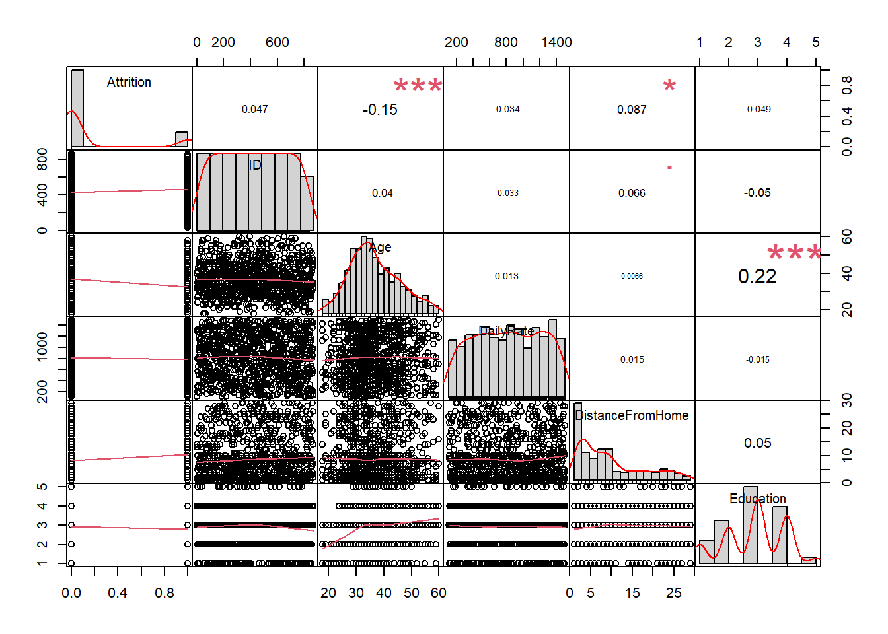
#plot the correlation data with respect to attrition for each feature vector
att <- select(numericAttritionDf, c('Attrition','EmployeeNumber', 'EnvironmentSatisfaction', 'HourlyRate', 'JobInvolvement', 'JobLevel'))
chart.Correlation(att, histogram=TRUE, pch=19)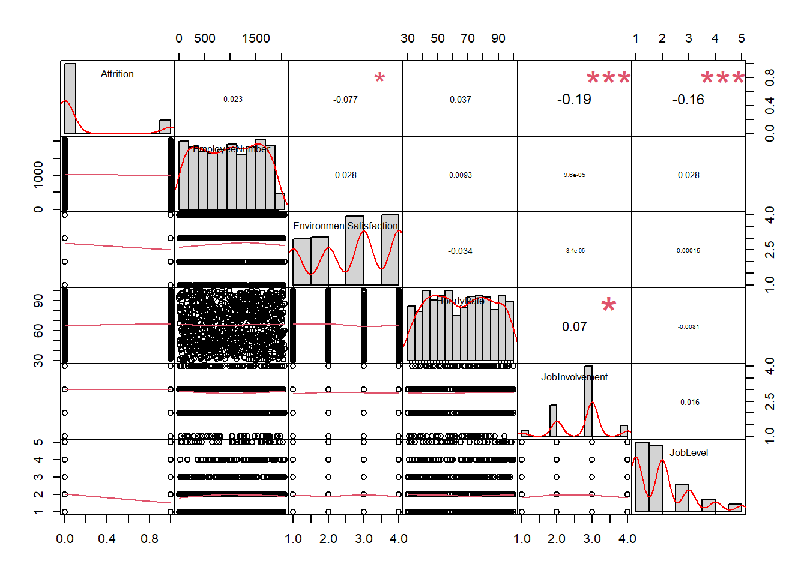
#plot the correlation data with respect to attrition for each feature vector
att <- select(numericAttritionDf, c('Attrition','JobSatisfaction', 'MonthlyIncome', 'MonthlyRate', 'NumCompaniesWorked', 'PercentSalaryHike'))
chart.Correlation(att, histogram=TRUE, pch=19)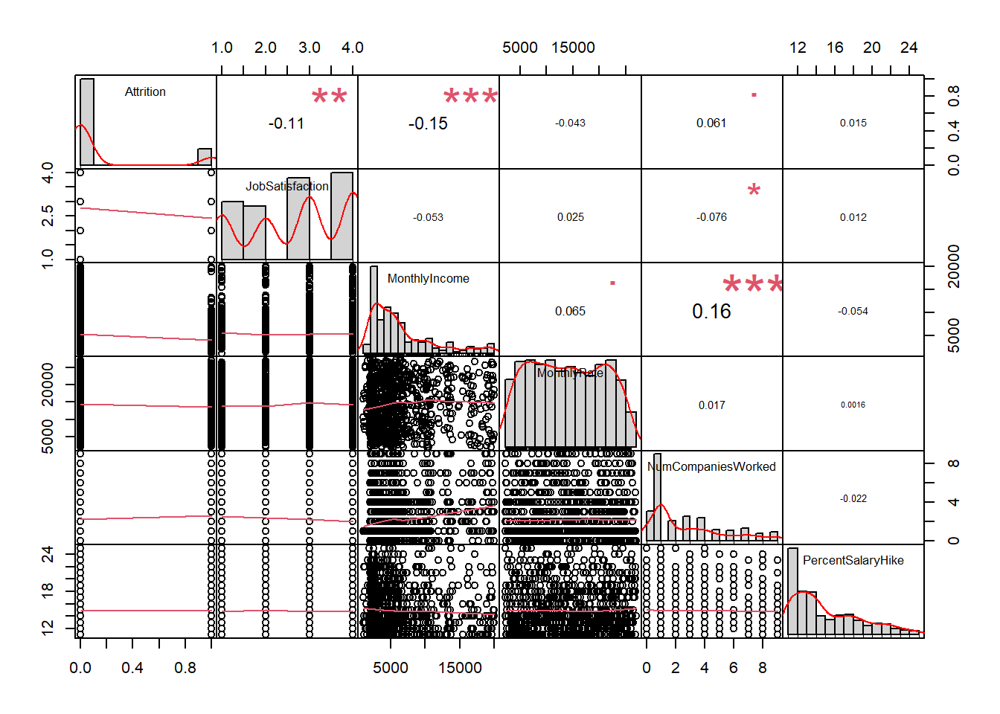
#plot the correlation data with respect to attrition for each feature vector
att <- select(numericAttritionDf, c('Attrition','PerformanceRating', 'RelationshipSatisfaction', 'StockOptionLevel', 'TotalWorkingYears', 'TrainingTimesLastYear'))
chart.Correlation(att, histogram=TRUE, pch=19)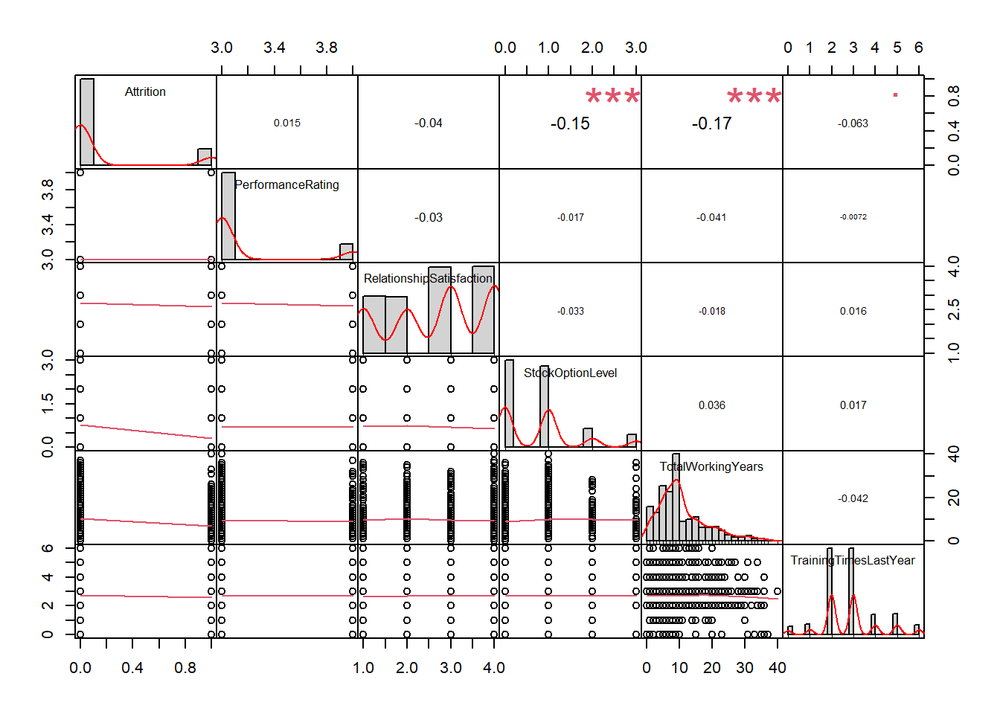
#plot the correlation data with respect to attrition for each feature vector
att <- select(numericAttritionDf, c('Attrition','WorkLifeBalance', 'YearsAtCompany', 'YearsInCurrentRole', 'YearsSinceLastPromotion', 'YearsWithCurrManager'))
chart.Correlation(att, histogram=TRUE, pch=19)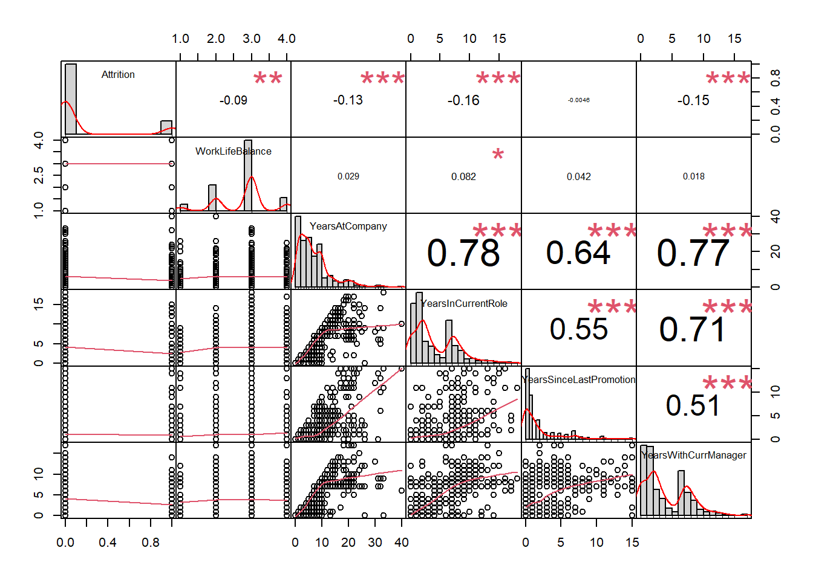
5. Compute the correlation values between categorical features and the Attrition variable
#convert the categorical variables to numbers so we can plot them
factAttritionDF <- caseStudyMin %>% keep(is.character)
factAttritionDF <- factAttritionDF %>% mutate_if(is.character, as.factor)
factAttritionDF <- factAttritionDF %>% mutate_if(is.factor, as.numeric)
#not needed
#summary(factAttritionDF)
#plot the correlation data with respect to attrition for each feature vector
chart.Correlation(factAttritionDF, histogram=TRUE, pch=19)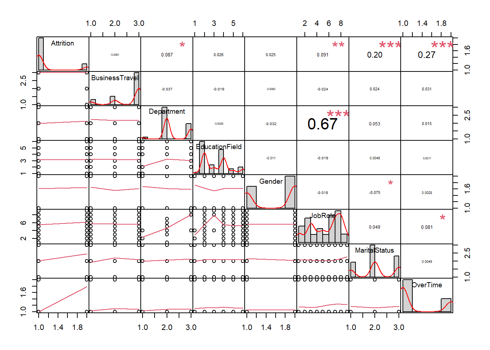
6. Identify any relationship between the Attrition variable and other features in the dataset
Using the correlation data listed above we will create a new data frame to contain features that have showed some relationship to the Attrition variable.
#features we found from the eda
caseStudyFeatures <- select(caseStudyMin, c('ID','Attrition','Age', 'DistanceFromHome', 'EnvironmentSatisfaction', 'JobInvolvement', 'JobLevel', 'JobSatisfaction', 'MonthlyIncome', 'NumCompaniesWorked', 'StockOptionLevel', 'TotalWorkingYears', 'TrainingTimesLastYear','WorkLifeBalance', 'YearsAtCompany', 'YearsInCurrentRole', 'YearsWithCurrManager', 'Department', 'JobRole', 'MaritalStatus', 'OverTime', 'Gender', 'Education', 'YearsSinceLastPromotion'))
#show the selected items
names(caseStudyFeatures)## [1] "ID" "Attrition"
## [3] "Age" "DistanceFromHome"
## [5] "EnvironmentSatisfaction" "JobInvolvement"
## [7] "JobLevel" "JobSatisfaction"
## [9] "MonthlyIncome" "NumCompaniesWorked"
## [11] "StockOptionLevel" "TotalWorkingYears"
## [13] "TrainingTimesLastYear" "WorkLifeBalance"
## [15] "YearsAtCompany" "YearsInCurrentRole"
## [17] "YearsWithCurrManager" "Department"
## [19] "JobRole" "MaritalStatus"
## [21] "OverTime" "Gender"
## [23] "Education" "YearsSinceLastPromotion"7. Compute the correlation values between numeric features and the MonthlyIncome variable
numCaseStudyDf <- caseStudyMin %>% keep(is.numeric)
#plot the correlation data with respect to MonthlyIncome for each feature vector
att <- select(numCaseStudyDf, c('MonthlyIncome','ID','Age','DailyRate', 'DistanceFromHome', 'Education'))
chart.Correlation(att, histogram=TRUE, pch=19)
#plot the correlation data with respect to MonthlyIncome for each feature vector
att <- select(numCaseStudyDf, c('MonthlyIncome','EmployeeNumber', 'EnvironmentSatisfaction', 'HourlyRate', 'JobInvolvement', 'JobLevel'))
chart.Correlation(att, histogram=TRUE, pch=19)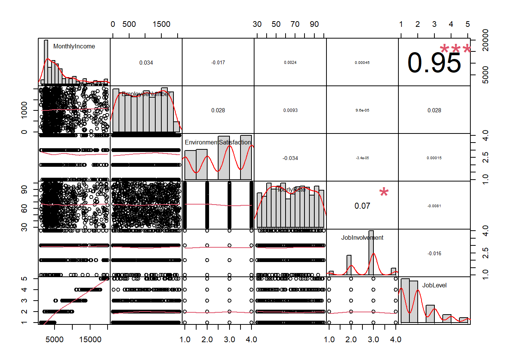
#plot the correlation data with respect to MonthlyIncome for each feature vector
att <- select(numCaseStudyDf, c('MonthlyIncome','JobSatisfaction', 'MonthlyRate', 'NumCompaniesWorked', 'PercentSalaryHike'))
chart.Correlation(att, histogram=TRUE, pch=19)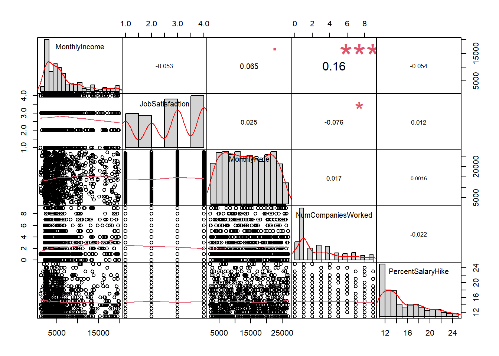
#plot the correlation data with respect to MonthlyIncome for each feature vector
att <- select(numCaseStudyDf, c('MonthlyIncome','PerformanceRating', 'RelationshipSatisfaction', 'StockOptionLevel', 'TotalWorkingYears', 'TrainingTimesLastYear'))
chart.Correlation(att, histogram=TRUE, pch=19)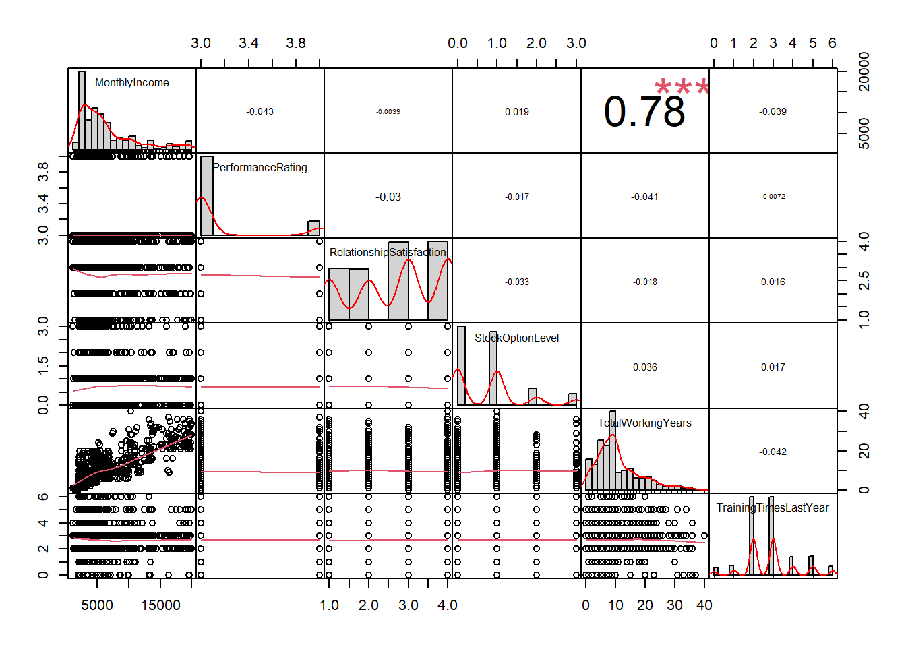
#plot the correlation data with respect to MonthlyIncome for each feature vector
att <- select(numCaseStudyDf, c('MonthlyIncome','WorkLifeBalance', 'YearsAtCompany', 'YearsInCurrentRole', 'YearsSinceLastPromotion', 'YearsWithCurrManager'))
chart.Correlation(att, histogram=TRUE, pch=19)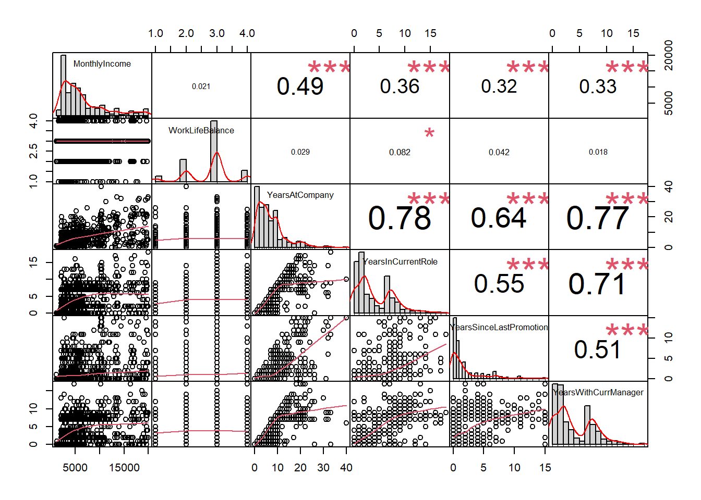
8. Identify any relationship between the MonthlyIncome variable and other variables in the dataset
The JobLevel and TotalWorkingYears variables appear to be highly correlated with the MonthlyIncome variable.
Modeling
Build a classification model to predict
Attritionwith >60% specificity and >60% selectivity.Build a regression model to predict income with an RMSE < $3000.
1. Build a classification model to predict attrition with >60% specificity and >60% selectivity
For classification we will train a Naive Bayes classifier. The features used for training the model were identified by their relationship to the Attrition variable. Additionally, we use down sampling and invert the percentage of training samples versus their respective population. As a result, we use ~70% of the Attrition=yes samples and ~30% of the Attrition=No samples to build a training set containing ~30% of the data available. The remaining ~70% of the dataset is used for testing.
This process is executed 100 times with different seed values.
#required libraries
library('e1071')
library(caret)
#features we found from the eda
caseStudyFeatures <- select(caseStudyMin, c('ID','Attrition','Age', 'DistanceFromHome', 'EnvironmentSatisfaction', 'JobInvolvement', 'JobLevel', 'JobSatisfaction', 'MonthlyIncome', 'NumCompaniesWorked', 'StockOptionLevel', 'TotalWorkingYears', 'TrainingTimesLastYear','WorkLifeBalance', 'YearsAtCompany', 'YearsInCurrentRole', 'YearsWithCurrManager', 'Department', 'JobRole', 'MaritalStatus', 'OverTime', 'Gender', 'Education', 'YearsSinceLastPromotion'))
#we will invert the % of the training population vs actual population for training the model
200 / sum(caseStudyFeatures$Attrition == 'No') ## [1] 0.2739726100 / sum(caseStudyFeatures$Attrition == 'Yes')## [1] 0.7142857#run the model 100 times to get an average of what it can do
iterations = 100
accs = data.frame(accuracy = numeric(iterations), specificity = numeric(iterations), sensitivity = numeric(iterations))
#do 100 random runs of the model
for(i in 1:iterations)
{
#use the counter as a seed so we start from different places each time
set.seed(i)
#get 200 random no samples
tmp_n <- filter(caseStudyFeatures, caseStudyFeatures$Attrition == 'No') %>% sample_n(., 200)
#get 100 random yes samples
tmp_y <- filter(caseStudyFeatures, caseStudyFeatures$Attrition == 'Yes') %>% sample_n(., 100)
#combine the yes and no samples
training <- merge(tmp_n, tmp_y, all=TRUE)
#remove our testing samples from the training pop
testing <- caseStudyFeatures %>% filter(!ID %in% training$ID)
testing <- testing[,!names(testing) %in% c('ID')]
training <- training[,!names(training) %in% c('ID')]
#train the model
model <- naiveBayes(Attrition~.,data = training)
p <- predict(model, testing, type='raw')
#save the results
cm <- confusionMatrix(table(predict(model,testing),testing$Attrition))
accs$accuracy[i] <- cm$overall[1]
accs$sensitivity[i] <- cm[4]$byClass[1]
accs$specificity[i] <- cm[4]$byClass[2]
accs$index[i] <- i
}
#get the avg accuracy
mean(accs$accuracy)## [1] 0.7223333#get the avg specificity
mean(accs$specificity)## [1] 0.69625#get the avg sensitivity
mean(accs$sensitivity)## [1] 0.7243019#inspect the mean accuracy of the model
accs %>% ggplot(aes(x=index, y=accuracy)) + geom_point() +geom_smooth(method = lm) + ggtitle('Bayes Classification (accuracy)')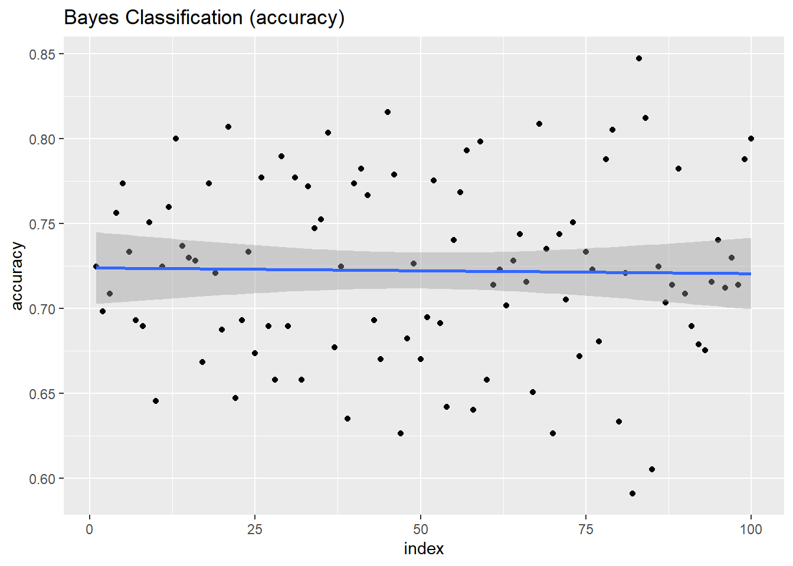
#inspect the mean specificity of the model
accs %>% ggplot(aes(x=index, y=specificity)) + geom_point() +geom_smooth(method = lm) + ggtitle('Bayes Classification (specificity)')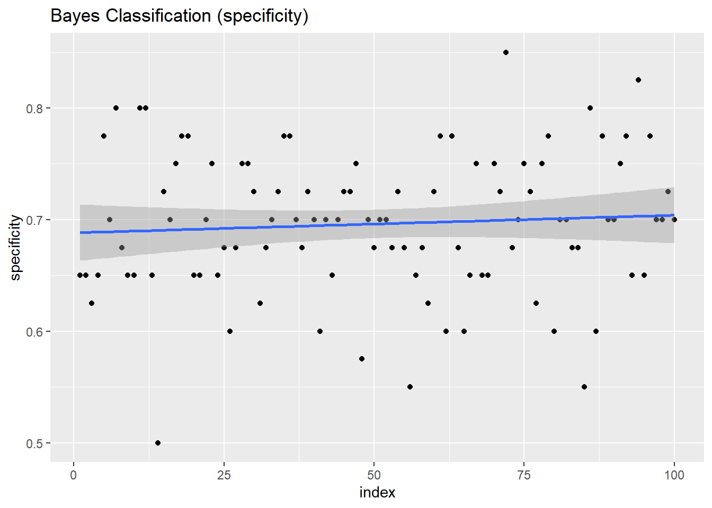
#inspect the mean sensitivity of the model
accs %>% ggplot(aes(x=index, y=sensitivity)) + geom_point() +geom_smooth(method = lm) + ggtitle('Bayes Classification (sensitivity)')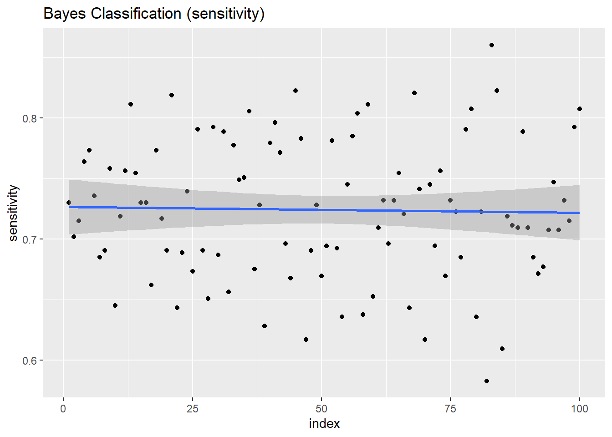
#just take the last model
#and use it
p <- predict(model, caseStudyFeatures, type='raw')
#append the predictions
t <- data.frame(caseStudyMin, p)
colnames(t)[35] <- "Prediction"
#set the string values
o <- t %>% mutate(Prediction = ifelse(Prediction >= .5, 'Yes', 'No'))
outdata <- select(o, c('ID', 'Prediction'))
#rename
colnames(outdata)[2] <- 'Attrition'
#dont do this on the website
#c <- outdata[with(outdata, order(ID)),]
#write.csv(c,"..\\predictions\\CaseStudy2PredictionsClassify.csv", row.names = FALSE)2. Build a regression model to predict income with an RMSE < $3000
#required libraries
library(Metrics)
#plot the data to see what we are working with
numCaseStudyDf %>% ggplot(aes(x=TotalWorkingYears, y=MonthlyIncome)) + geom_point() +ggtitle('TotalWorkingYears vs MonthlyIncome') + geom_smooth(method = lm)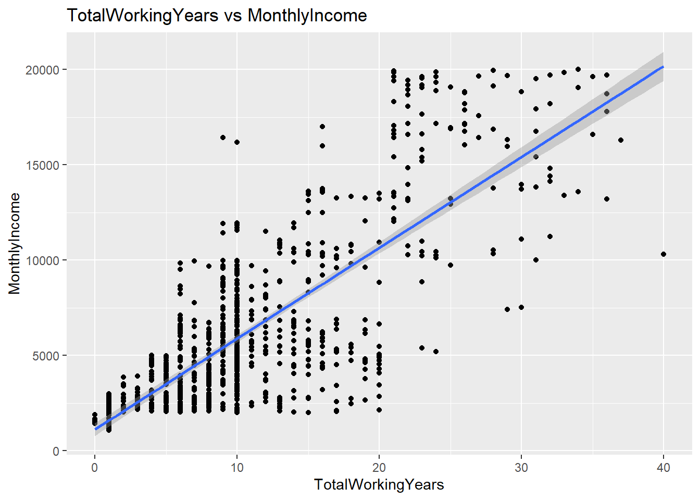
#create a new df for our highly correlated variables
incomeDF <- data.frame(numCaseStudyDf$TotalWorkingYears, numCaseStudyDf$MonthlyIncome, numCaseStudyDf$JobLevel)
names(incomeDF)[1] <- 'TotalWorkingYears'
names(incomeDF)[2] <- 'MonthlyIncome'
names(incomeDF)[3] <- 'JobLevel'
#train the regression model
lmh <- lm(incomeDF$MonthlyIncome ~ incomeDF$TotalWorkingYears+incomeDF$JobLevel, data = incomeDF)
#good p-values for TotalWorkingYears and JobLevel
summary(lmh)##
## Call:
## lm(formula = incomeDF$MonthlyIncome ~ incomeDF$TotalWorkingYears +
## incomeDF$JobLevel, data = incomeDF)
##
## Residuals:
## Min 1Q Median 3Q Max
## -5469.9 -876.8 64.5 728.3 3937.5
##
## Coefficients:
## Estimate Std. Error t value Pr(>|t|)
## (Intercept) -1798.38 99.98 -17.987 < 2e-16 ***
## incomeDF$TotalWorkingYears 55.66 10.04 5.544 3.94e-08 ***
## incomeDF$JobLevel 3714.12 69.21 53.664 < 2e-16 ***
## ---
## Signif. codes: 0 '***' 0.001 '**' 0.01 '*' 0.05 '.' 0.1 ' ' 1
##
## Residual standard error: 1390 on 867 degrees of freedom
## Multiple R-squared: 0.9088, Adjusted R-squared: 0.9086
## F-statistic: 4322 on 2 and 867 DF, p-value: < 2.2e-16#get the data for our rmse calculation
dataB <- incomeDF[, c("MonthlyIncome", "TotalWorkingYears", "JobLevel")]
#our residuals dont show a pattern indicating we have a good model
plot(lmh$residuals, pch=16, col='blue', xlab='index', ylab='residual value')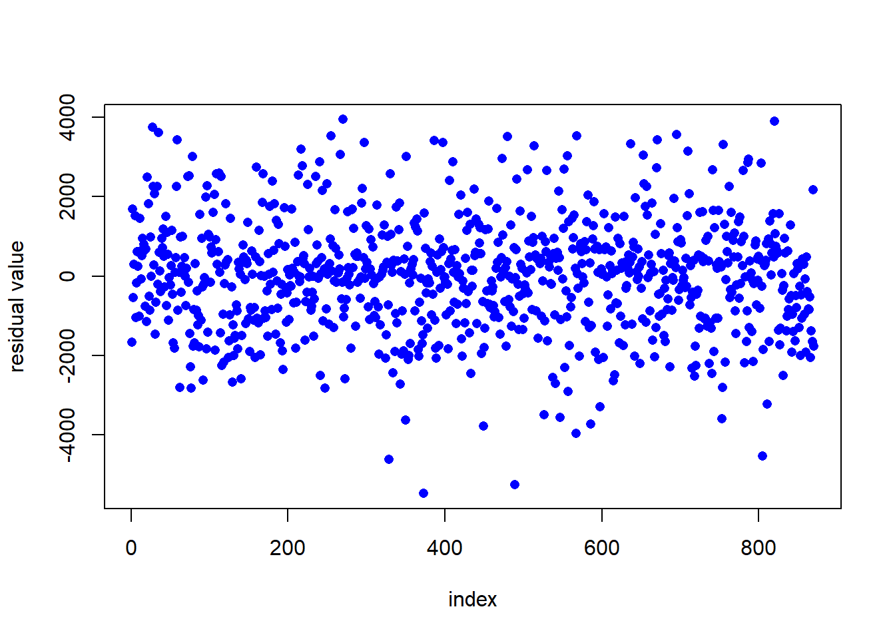
#build a prediction to test the model
predDf <- data.frame(MonthlyIncome <- c(8333), JobLevel <- c(1))
#predict and get the rmse
rmse(dataB$MonthlyIncome, predict(lmh, newdata=predDf))## [1] 1387.298
4. Comment on the distribution of Attrition variable
The distribution of the
Attritionvariable indicates that we have an imbalanced dataset. Only 16% of the population containsAttrition=Yes.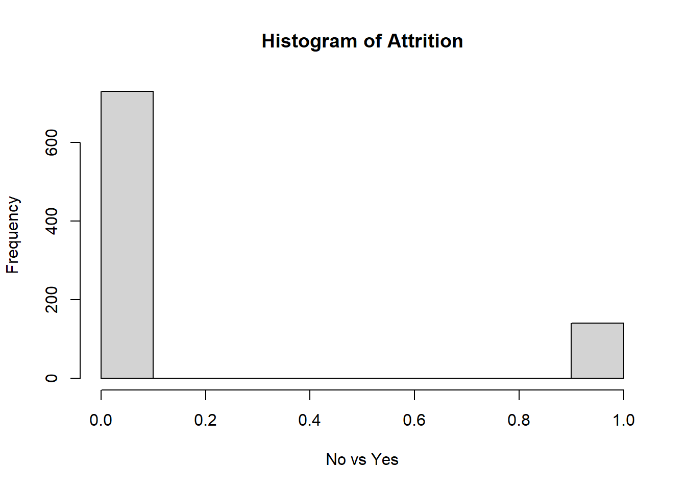